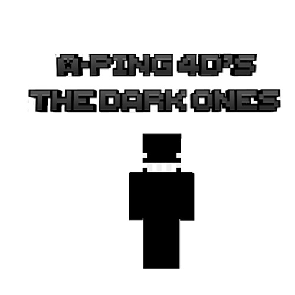
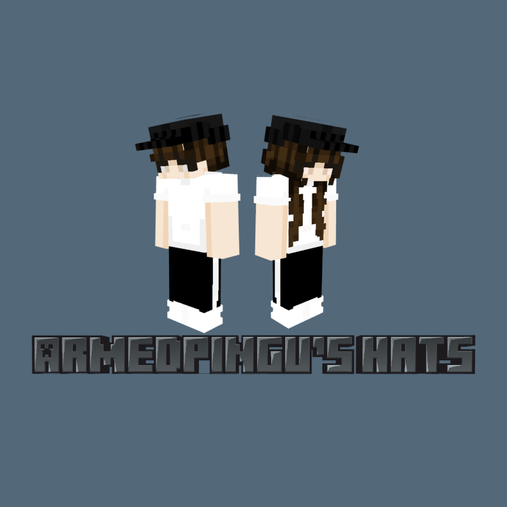
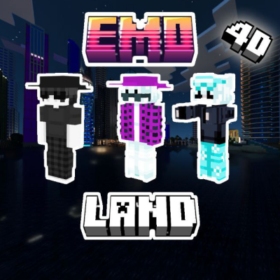

Armedpingu is a creative online persona best known for designing and sharing custom Minecraft skins and 4D skinpacks across platforms like CurseForge, Planet Minecraft, and GitHub. Armedpingu has built a reputation in the Minecraft community by producing unique skinpacks that often feature playful or edgy designs, such as hacker-themed looks, zombie arms, or darker minimalist styles.
They describe themselves as someone who enjoys programming, playing games like Outer Wilds, and experimenting with digital design. On Planet Minecraft, Armedpingu openly shares their passion for creating 4D cosmetics—skins enhanced with accessories like hats, wings, claws, or ears—which they’ve been making for several years.
Their projects have collectively garnered tens of thousands of downloads, showing a growing fanbase that appreciates their quirky and imaginative approach to customization. While they primarily post on CurseForge and MCPEDL, Armedpingu occasionally engages with the broader Minecraft community on other platforms, inviting suggestions and feedback to inspire new creations.
Armedpingu is a creative online persona best known for designing and sharing custom Minecraft skins and 4D skinpacks across platforms like CurseForge, Planet Minecraft, and GitHub. Armedpingu has built a reputation in the Minecraft community by producing unique skinpacks that often feature playful or edgy designs, such as hacker-themed looks, zombie arms, or darker minimalist styles. They describe themselves as someone who enjoys programming, playing games like Outer Wilds, and experimenting with digital design. On Planet Minecraft, Armedpingu openly shares their passion for creating 4D cosmetics—skins enhanced with accessories like hats, wings, claws, or ears—which they’ve been making for several years. Their projects have collectively garnered tens of thousands of downloads, showing a growing fanbase that appreciates their quirky and imaginative approach to customization. While they primarily post on CurseForge and MCPEDL, Armedpingu occasionally engages with the broader Minecraft community on other platforms, inviting suggestions and feedback to inspire new creations. In short, Armedpingu is both a hobbyist programmer and a dedicated Minecraft skin designer whose work blends humor, creativity, and technical flair.